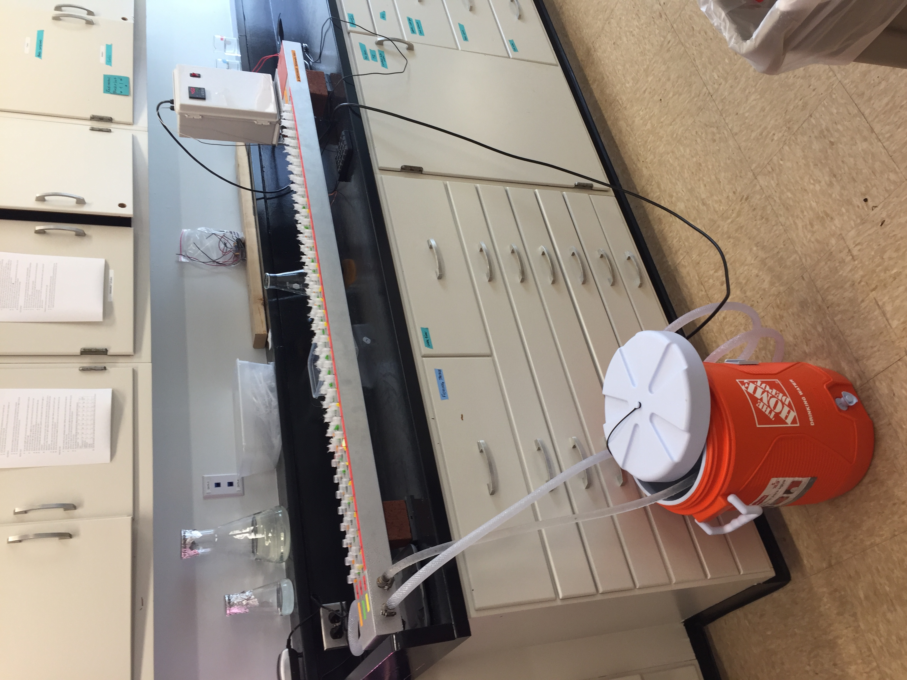
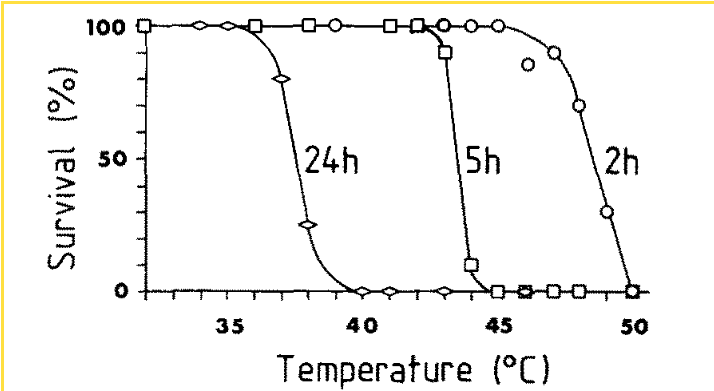
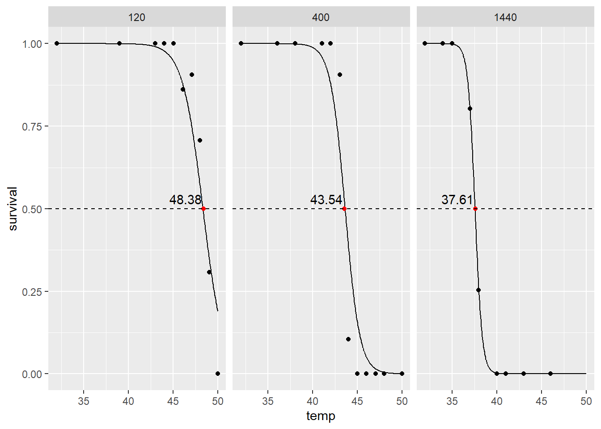

![]()
#A function to obtain LT50 values from survivorship curves across multiple temperature exposures
#columns in dataframe should contain a temp, survival, and exposure (in minutes) column
library(MASS)
library(dplyr)
library(tidyr)
library(brglm)
library(ggplot2)
lt50fun<-function(data){
exun<-unique(data$exposure)
df<-list()
for (i in 1:length(exun)){
tmp<-filter(data,exposure==exun[[i]])
df[[i]]<-tmp
}
modlist<-list()
for (i in 1:length(df)){
mod<-brglm(data=df[[i]],survival~temp,family="binomial")
modlist[[i]]<-mod
}
names(modlist)<-exun
LT50<-list()
for(i in 1:length(modlist)){
lt<-dose.p(modlist[[i]],p=0.5)[1]
LT50[[i]]<-lt[[1]]
}
lt50df<-data.frame(as.data.frame(LT50)%>%tidyr::gather(exposure,temp)%>%mutate(exposure=exun)%>%mutate("survival"=0.5))%>%mutate("type"="LT50")
data<-(rbind(data%>%mutate("type"="obs"),lt50df))
fit<-brglm(survival~temp*exposure,data=data,family="binomial")
pred_fit<-data.frame(temp=seq(min(data$temp),max(data$temp),
len=500),exposure=rep(unique(data$exposure),each=500))
pred_fit$survival<-predict(fit, pred_fit,type="response")
x<-ggplot()+geom_point(data=data,aes(x=temp,y=survival,group=exposure))+geom_line(data=pred_fit,aes(x=temp,y=survival))+
facet_wrap(~exposure)+geom_point(data=data%>%filter(type=="LT50"),aes(x=temp,y=survival,group=exposure),color="red")+
geom_hline(yintercept=0.5,linetype="dashed")+geom_text(data=data%>%filter(type=="LT50"),aes(x=temp,y=survival,label=sprintf(fmt="%0.2f",round(temp,digits=2))),nudge_y=0.03,nudge_x=-2)
par(ask=TRUE)
print(x)
return(lt50df)
}Occasionally on my blog, I will try and share some of the coding tips, tricks, and functions that I have come up with during my research. The function I am sharing today had it’s origins in my master’s research, when I needed to obtain LT50 measures from snails in a heatbar experiment. The heatbar (Fig. 1) created a ramp of temperatures using a heating element on one end and a cooling element (ice water bath) on the other. At the end of five hours of heating, I recorded final temperature and the alive/dead state of each snail in each position. This gave me data that had temperature and a binomial alive/dead state. A great exercise in binomial regression.

Using the code I used for this LT50 analysis (which was published in Villeneuve, Komoroske, and Cheng (2021) ), I wanted to put together a function that automates a lot of the coding to extract LT50 measures from experimental groups. This is particularly useful in the context of scraping thermal limit data from older papers that maybe do not report or calculate LT50 from survivorship data at given temperatures.
This function requires three columns in your dataframe, renamed as follows:
temp: temperature of treatment in degrees Celsius
survival: pooled survivorship percentage for each temperature treatment
exposure: can be any grouping of interest; I built the function considering different lengths of exposure in minutes
Let’s try this function out on some raw data. I stumbled across a very cool paper comparing the effects of different aerial exposure durations on LT50 in the mangrove oyster Crassostrea rhizophorae (Littlewood (1989) ). The authors wanted to know if duration of emersion during low tide would impact thermal tolerance of mangrove oysters. Figure 3 displays percent survival of oyster groups exposed to three different emersion levels. I extracted data.

I extracted survival using Webplot Digitzier (an amazing tool for anyone conducting metanalysis). Once I have a spreadsheet of survival, I can quickly read it into R and extract LT50 measures, and produce plots of survival curves.
littlewood_rhizo<-read.csv("rhizo_surv.csv")
#conver to percentage scale
littlewood_rhizo$survival<-littlewood_rhizo$survival/100
rhizolt<-lt50fun(littlewood_rhizo)
Calculated LT50 values are also produced from this function.
exposure temp survival type
1 1440 37.61013 0.5 LT50
2 400 43.54473 0.5 LT50
3 120 48.38119 0.5 LT50These LT50 measures are pretty close to what Littlewood (1989) calculated!
While I would argue that LT50 is not a very useful measure of thermal tolerance (a future blog topic), this allows us to see that aerial exposure duration seems to cause a large decrease in LT50!
Let me know if you have any improvements or comments.
References
Littlewood, D. Timothy J. 1989. “Thermal Tolerance and the Effects of Temperature on Air-Gaping in the Mangrove Oyster, Crassostrea Rhizophorae.” Comparative Biochemistry and Physiology Part A: Physiology 93 (2): 395–97. https://doi.org/10.1016/0300-9629(89)90054-6.
Villeneuve, Andrew R, Lisa M Komoroske, and Brian S Cheng. 2021. “Diminished Warming Tolerance and Plasticity in Low-Latitude Populations of a Marine Gastropod.” Edited by Steve Cooke. Conservation Physiology 9 (1). https://doi.org/10.1093/conphys/coab039.